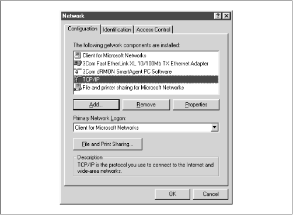
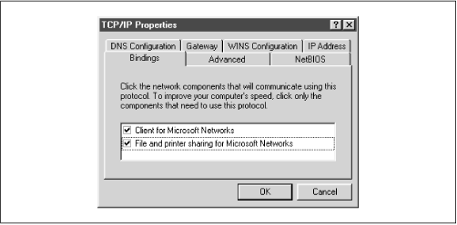
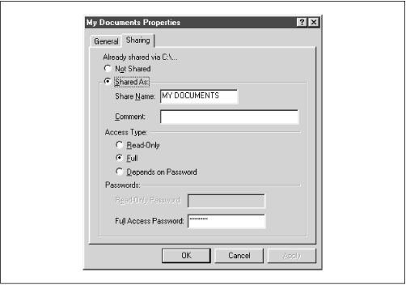
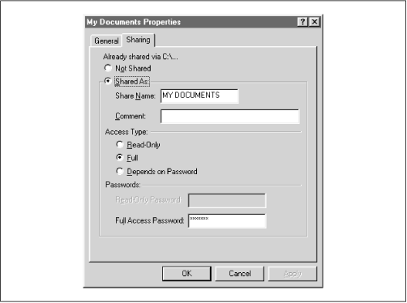

Using Samba
Robert Eckstein, David Collier-Brown, Peter Kelly1st Edition November 1999
1-56592-449-5, Order Number: 4495
416 pages, $34.95
|
|
|
|
|
Using SambaRobert Eckstein, David Collier-Brown, Peter Kelly1st Edition November 1999 1-56592-449-5, Order Number: 4495 416 pages, $34.95 |
8.7 Backups with smbtar
Our final topic in this chapter is the smbtar tool. One common problem with modem PCs is that floppies and even CD-ROMs are often too small to use for backups. However, buying one tape drive per machine would also be silly. Consequently, many sites don't back up their PCs at all. Instead, they reinstall them using floppy disks and CD-ROMs when they fail.
Thankfully, Samba provides us with another option: you can back up PCs' data using the smbtar tool. This can be done on a regular basis if you keep user data on your Samba system, or only occasionally, to save the local applications and configuration files and thus make repairs and reinstallations quicker.
To back up PCs from a Unix server, you need to do three things:
Ensure that File and Printer Sharing is installed on the PC and is bound to the TCP/IP protocol.
Explicitly share a disk on the PC so it can be read from the server.
We'll use Windows 95/98 to illustrate the first two steps. Go to the Networking icon in the Control Panel window, and check that File and Printer Sharing for Microsoft Networks is currently listed in the top window, as shown in Figure 8.2.
Figure 8.2: The Networking window
If "File and printer sharing for Microsoft Networks" isn't installed, you can install it by clicking on the Add button on the Network panel. After pressing it, you will be asked what service to add. Select Service and move forward, and you will be asked for a vendor and a service to install. Finally, select "File and printer sharing for Microsoft Networks," and click on Done to install the service.
Once you've installed "File and printer sharing for Microsoft Networks," return to the Network panel and select the TCP/IP protocol that is tied to your Samba network adapter. Then, click on the Properties button and choose the Bindings tab at the top. You should see a dialog box similar to Figure 8.3. Here, you'll need to verify that the "File and Printer Sharing" checkbox is checked, giving it access to TCP/IP. At this point you can share disks with other machines on the net.
Figure 8.3: TCP/IP Bindings
The next step is to share the disk you want to back up with the tape server. Go to My Computer and select, for example, the My Documents directory. Then right-click on the icon and select its Properties. This should yield the dialog box in Figure 8.4.
Figure 8.4: My Documents Properties
Select the Sharing tab and turn file sharing on. You now have the choice to share the disk as read-only, read-write (Full), or either, each with separate password. This is the Windows 95/98 version, so it provides only share-level security. In this example, we made it read/write and set a password, as shown in Figure 8.5. When you enter the password and click on OK, you'll be prompted to re-enter it. After that, you have finished the second step.
Figure 8.5: MyFiles Properties as shared
Finally, the last step is to set up a backup script on the tape server, using the smbtar program. The simplest script might contain only a single line and would be something like the following:
smbtar -s client -t /dev/rst0 -x "My Documents" -ppasswordThis unconditionally backs up the //client/My Documents share to the device /dev/rst0. Of course, this is excessively simple and quite insecure. What you will want to do will depend on your existing backup scheme.
However, to whet your appetite, here are some possibilities of what smbtar can do:
Back up files incrementally using the DOS archive bit (the
-ioption). This requires the client share to be accessed read-write so the bit can be cleared by smbtarBack up only files that have changed since a specified date (using the
-Nfilenameoption)Back up entire PC drives, by sharing all of C: or D:, for example, and backing that up
Except for the first example, each of these can be done with the PC sharing set to read-only, reducing the security risk of having passwords in scripts and passing them on the command line.
 |
 |
 |
| 8.6 Miscellaneous Options |
 | 9. Troubleshooting Samba |
Back to: Using Samba
© 1999, O'Reilly & Associates, Inc.